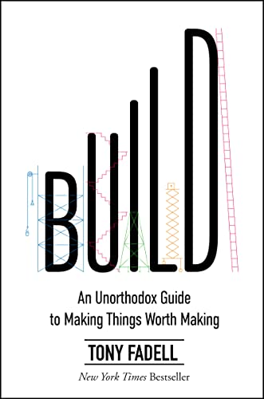

(Audio) Build, by Fadell
Friday May 17, 2024
The "advice encyclopedia" from the father of the iPod is billed as "an unorthodox guide" and maybe it is, depending on your orthodoxy. Here are some of its recommendations as I recall them:
- Work really hard.
- Be a perfectionist.
- Micro-manage. (Tony tries to clarify that what he recommends isn't micro-managing; the distinction is something like managing outputs as good vs. process as bad.)
- Push people hard.
- Have interviews done by a small group of people who will work with the new person, not a bunch of people from all over the company.
- Don't have a lot of perks at the office.
- Blame Google for Nest not going how you wanted.
I think the most interesting thing, to me, is the tension between intrinsic motivation vs. external pushing for generating results. Tony seems like a pusher, and he's gotten results. But do bosses have to be so hard-driving?
Fadell comments on how much time he spent on "people problems" (HR or personnel issues) as a leader. This might always be the case, but I also wonder whether particular leadership styles (and related hiring choices) lead to more of this. Fadell says he followed a "no assholes rule" in hiring. Might anosognosia be at play?
I'm not sure I'd like to work with Fadell, but I tend to like his goals and his Build Collective seems to be supporting cool things. (Ends vs. means?) The book is almost a promotional tie-in for this venture operation.
